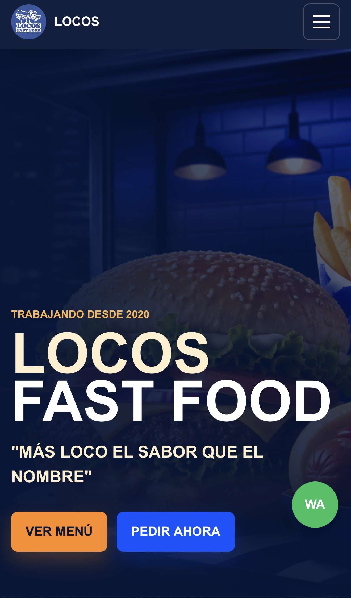

Presencia digital
Experiencias digitales que fortalecen la identidad, comunicación y presencia comercial de cada negocio.
Desarrollamos soluciones digitales que integran estrategia, diseño y tecnología para fortalecer operaciones, optimizar procesos y crear nuevas oportunidades de crecimiento.
Desarrollamos tecnología alineada con los objetivos de cada organización. Creamos soluciones funcionales, escalables y adaptadas a las necesidades de cada proyecto.
Experiencias digitales que fortalecen la identidad, comunicación y presencia comercial de cada negocio.
Soluciones funcionales e intuitivas diseñadas alrededor de necesidades concretas.
Herramientas para optimizar procesos, centralizar información y mejorar la gestión operativa.
Desarrollo tecnológico específico para requerimientos, procesos y objetivos particulares.
Nuestro portafolio está integrado por soluciones reales. Explora cada caso para conocer el enfoque, los beneficios y el resultado.

Experiencia digital diseñada para facilitar la consulta del menú y acercar al cliente al pedido desde dispositivos móviles.
Ver caso de estudio →MARTROLAB desarrolla soluciones digitales adaptadas a las necesidades de cada proyecto, integrando diseño, funcionalidad y tecnología con una visión orientada al negocio.
Cuéntanos qué necesitas. Analizaremos tu proyecto para preparar una propuesta acorde con sus objetivos y alcance.